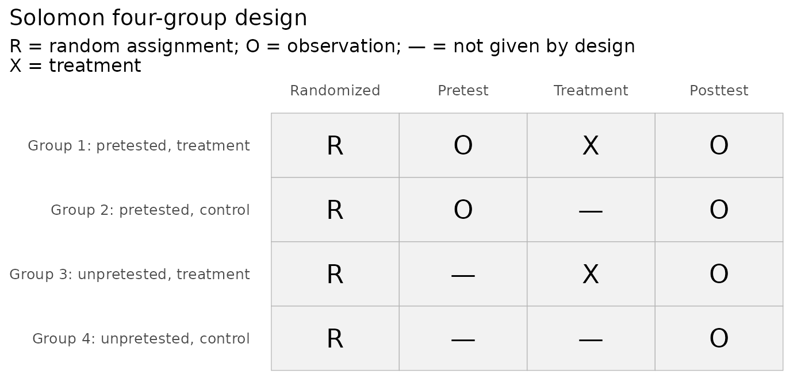
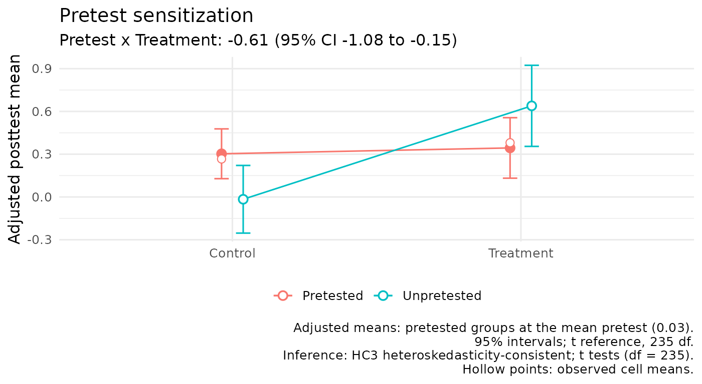

This article is for instructors who teach the Solomon four-group design in a research-methods, experimental-design, or statistics course. Each lesson has three parts:
- a goal;
- a short demonstration;
- an exercise, with a solution you can reveal.
The lessons build on each other but can be taught separately.
The lessons use two kinds of data:
-
Simulated data with known effects.
simulate_solomon()generates a study with the treatment, pretest, and sensitization effects you choose, and records the true values, so students can check whether an analysis recovers them. -
Published studies. The package bundles several:
- Solomon’s (1949) own spelling experiment
(
solomon1949); - a published data set with individual scores
(
mai2020); - two published summaries (
elkarkri2025aandkvalem1996).
- Solomon’s (1949) own spelling experiment
(
Lesson 1: What each group contributes
Goal. Students can say what each of the four groups adds, and which comparison estimates which effect.
Campbell and Stanley (1963/1966, p. 25) summarized the design’s strengths:
- it estimates both the main effect of testing and the interaction of testing with the treatment;
- it replicates the treatment effect in four comparisons;
- the unpretested control group, compared with the pretests, shows the combined effect of maturation and history.

Exercise 1. Using solomon_example,
compute the four posttest means. Then say which difference of means
estimates each of these:
- the treatment effect without a pretest;
- the treatment effect with a pretest;
- the effect of the pretest among controls;
- the Pretest x Treatment interaction.
Solution
m <- with(solomon_example, tapply(y_post, list(treat = treat, pretested = pretested), mean))
m
#> pretested
#> treat 0 1
#> 0 51.10000 54.50000
#> 1 54.73333 56.23333
c(
treatment_unpretested = m["1", "0"] - m["0", "0"],
treatment_pretested = m["1", "1"] - m["0", "1"],
pretest_among_control = m["0", "1"] - m["0", "0"],
interaction = (m["1", "1"] - m["0", "1"]) - (m["1", "0"] - m["0", "0"])
)
#> treatment_unpretested treatment_pretested pretest_among_control
#> 3.633333 1.733333 3.400000
#> interaction
#> -1.900000The interaction is the difference between the two treatment effects.
solomon_example was simulated with known values
(?solomon_example): a treatment effect of 5 points in both
conditions, so a true interaction of 0, and a pretest effect of 2
points. The sample differences vary around those values.
fit_solomon_glm() estimates the same contrasts in one
model, and it adjusts the pretested comparison for the pretest.
Lesson 2: Building in sensitization
Goal. Students see what sensitization looks like, and that the analysis recovers an effect they built in.
Here the treatment works in both conditions, but less well after a pretest. That is a negative interaction, the pattern Solomon (1949, p. 145) found:
d <- simulate_solomon(n = 60, delta = 0.6, sens = -0.4, rho = 0.6, seed = 2)
attr(d, "truth")
#> estimand true_value
#> 1 ATE (avg over pretest) 0.4
#> 2 Pretest x Treatment -0.4
#> 3 Treatment | pretested 0.2
#> 4 Treatment | unpretested 0.6
#> 5 Pretest effect | control 0.0
fit <- with(d, fit_solomon_glm(y_post, treat, pretested, y_pre))
fit
#> Solomon GLM (unified model)
#> Formula: y ~ treat * pretested + pre_obs
#> Covariance: HC3 heteroskedasticity-consistent; t tests (df = 235)
#>
#> Term Est (SE) t df p 95% CI
#> (Intercept) -0.016 (0.120) -0.13 235 0.894 [-0.253, 0.221]
#> treat 0.655 (0.188) 3.49 235 <.001 [0.285, 1.026]
#> pretested 0.301 (0.149) 2.02 235 0.045 [0.007, 0.595]
#> pre_obs 0.563 (0.057) 9.82 235 <.001 [0.450, 0.676]
#> treat:pretested -0.614 (0.234) -2.63 235 0.009 [-1.075, -0.153]
#>
#> Key contrasts Est (SE) t df p 95% CI Wald R2
#> ATE (avg over pretest) 0.348 (0.117) 2.98 235 0.003 [0.118, 0.579] 0.036
#> Pretest x Treatment -0.614 (0.234) -2.63 235 0.009 [-1.075, -0.153] 0.029
#> Treatment | pretested 0.041 (0.139) 0.29 235 0.769 [-0.233, 0.315] 0.000
#> Treatment | unpretested 0.655 (0.188) 3.49 235 <.001 [0.285, 1.026] 0.049
#>
#> Wald R2: partial R-squared for conventional Gaussian OLS;
#> a Wald-based descriptive approximation when robust covariance is used.
plot_sensitization(fit)
Exercise 2. Simulate the same study with
rho = 0 and with rho = 0.8, keeping the seed.
Compare the standard errors of the four contrasts. Which ones change,
and why?
Solution
se <- function(rho) {
d <- simulate_solomon(n = 60, delta = 0.6, sens = -0.4, rho = rho, seed = 2)
f <- with(d, fit_solomon_glm(y_post, treat, pretested, y_pre))
stats::setNames(f$effects$std.error, f$effects$contrast)
}
round(rbind(`rho = 0` = se(0), `rho = 0.8` = se(0.8)), 3)
#> ATE (avg over pretest) Pretest x Treatment Treatment | pretested
#> rho = 0 0.129 0.257 0.174
#> rho = 0.8 0.108 0.215 0.104
#> Treatment | unpretested
#> rho = 0 0.190
#> rho = 0.8 0.188The standard error of the effect among unpretested participants
hardly changes, because those participants have no pretest to adjust
for; the small difference comes from the simulated scores themselves.
The effect among pretested participants becomes more precise as
rho grows: the model adjusts for the pretest, and a
correlated pretest removes part of the error variance. The interaction
and the average effect combine both, so they improve less.
Lesson 3: Where the analysis began
Goal. Students can reproduce the first published analysis of the design, and say why it was replaced.
Solomon’s (1949) first design had three groups. He inferred the pretest mean of the unpretested group from the two pretested groups. He then computed each group’s improvement and an interaction term, I = d1 − (d2 + d3) (p. 143). His fifth-grade spelling experiment (Table II, p. 144):
g5 <- solomon1949[solomon1949$grade == 5, ]
g5
#> grade group pretested treat n pre_mean pre_se mean se change
#> 1 5 Experimental 1 1 10 3.2 0.8 9.9 1.6 6.7
#> 2 5 Control I 1 0 10 2.8 0.7 3.5 0.8 0.7
#> 3 5 Control II 0 1 10 NA NA 11.2 1.2 8.2
#> change_se
#> 1 0.9
#> 2 0.5
#> 3 NA
fit_solomon_1949(post_mean = g5$mean, pre_mean = g5$pre_mean[1:2], n = g5$n)
#> Solomon (1949) improvement-score analysis (historical)
#> ------------------------------------------------------
#> Design: three-group (Solomon, 1949, Table I, p. 142)
#>
#> Group n Pretest Training Pre mean Post mean Improvement
#> Experimental 10 yes yes 3.20 9.90 6.70
#> Control I 10 yes no 2.80 3.50 0.70
#> Control II 10 no yes 3.00 (inferred) 11.20 8.20
#>
#> Inferred pretest i = 3.00 (average of the pretested groups' means)
#> Interaction I = d1 - (d2 + d3) = -2.20
#>
#> Solomon gave no standard error or test for I. Campbell and Stanley
#> (1963/1966, p. 25) judged his gain-score suggestions unacceptable; see
#> fit_solomon_classic() for the tests that followed and fit_solomon_glm()
#> for the recommended analysis.Points for discussion:
- the groups were “roughly equated” by teachers’ judgments, not randomized (p. 144);
- there were 10 pupils per group;
- Solomon gave no test for I.
Campbell and Stanley (1963/1966, p. 25) judged his gain-score suggestions unacceptable, and recommended an analysis of variance of the posttests.
Exercise 3. Apply Solomon’s four-group formula to
solomon_example. Show that I equals the posttest
interaction contrast minus the pretest difference between the two
pretested groups. Why does the inferred pretest drop out?
Solution
s <- with(solomon_example, fit_solomon_1949(y_post, treat, pretested, y_pre))
c(I = s$I, posttest_contrast = s$posttest_contrast,
pretest_difference = s$pretest_difference,
check = s$posttest_contrast - s$pretest_difference)
#> I posttest_contrast pretest_difference check
#> -1.96666667 -1.90000000 0.06666667 -1.96666667Both unpretested groups get the same inferred pretest, i. It is subtracted once, in d3 = b3 − i, and added back once, in −d4 = −(b4 − i), so it cancels. With random assignment the pretest difference averages zero, so Solomon’s I and the modern interaction contrast estimate the same effect.
Lesson 4: The historical test sequence and its error rate
Goal. Students can follow the historical Test A–I sequence, and explain why a sequence of tests inflates the chance of a false finding.
Walton Braver and Braver (1988) proposed a sequence of tests that ends in a combination of the pretested and unpretested results. Sawilowsky et al. (1994) and Sawilowsky (1996) showed by simulation that the sequence, run when nothing is going on, declares some effect in about 12% to 14% of studies rather than 5%. The package’s replication found 13.5% for the 1995 version of the sequence with normal data and 30 per group (see the article “Historical Tests: Replicating the Published Error Rates”).
classic <- with(solomon_example, fit_solomon_classic(y_post, treat, pretested, y_pre,
flow = "1995"))
classic$path_string
#> [1] "A -> E -> H -> I"
classic$conclusion
#> [1] "Historical pathway (1995 revision, without Test D): no treatment test in the selected A-I sequence reaches the specified alpha level."Exercise 4. Simulate 200 studies in which nothing is going on (every effect is zero). Count how often the 1995 sequence declares an effect at any step.
Solution
declares_effect <- function(seed) {
d <- simulate_solomon(n = 30, seed = seed)
f <- with(d, fit_solomon_classic(y_post, treat, pretested, y_pre, flow = "1995"))
p <- vapply(f$tests[f$path], function(t) t$result$p.value[1], numeric(1))
any(p < 0.05)
}
rate <- mean(vapply(1:200, declares_effect, logical(1)))
c(rate = rate, monte_carlo_se = sqrt(rate * (1 - rate) / 200))
#> rate monte_carlo_se
#> 0.12500000 0.02338536With 200 studies the Monte Carlo standard error is about 2.4 percentage points, so different seeds give rates between about 9% and 18%, all well above 5%. Every test in the sequence uses alpha = .05. Each extra test is another chance for a false positive, and the chances add up. The recommended analysis fits one model and tests each estimand once.
Lesson 5: Absence of evidence
Goal. Students can explain why a nonsignificant interaction is not evidence that sensitization is absent.
Here is a small study with real sensitization of 0.3 standard deviations:
d <- simulate_solomon(n = 20, delta = 0.5, sens = 0.3, rho = 0.5, seed = 11)
fit <- with(d, fit_solomon_glm(y_post, treat, pretested, y_pre))
fit$effects[fit$effects$contrast == "Pretest x Treatment", ]
#> contrast estimate std.error statistic p.value df conf.low
#> 2 Pretest x Treatment 0.2054085 0.4371065 0.4699278 0.6397702 75 -0.6653523
#> conf.high r2 r2_lo r2_hi
#> 2 1.076169 0.002935784 NA NAThe interval is wide. It is compatible with no sensitization and with sensitization larger than the treatment effect itself. Claiming that sensitization is negligible needs an equivalence test against a smallest effect of interest fixed in advance (Lakens, 2017; Lakens et al., 2018):
equivalence_solomon(fit, bounds = 0.2)
#> Solomon equivalence test (TOST)
#> Contrast: Pretest x Treatment
#> Equivalence bounds (raw scale): [-0.200, 0.200]; alpha = 0.05
#> Inference: HC3 heteroskedasticity-consistent; t tests (df = 75)
#>
#> Estimate = 0.205 (SE = 0.437)
#> 90% CI [-0.523, 0.933] (equivalence); 95% CI [-0.665, 1.076] (test against zero)
#>
#> Lower bound test: t(75) = 0.93, p = 0.178
#> Upper bound test: t(75) = 0.01, p = 0.505
#> Equivalence (TOST): p = 0.505
#> Test against zero: t(75) = 0.47, p = 0.640
#>
#> Conclusion: Inconclusive: the contrast is neither different from zero nor
#> statistically equivalent.
#> Equivalence bounds must be justified and fixed before the data are examined;
#> see ?equivalence_solomon.Exercise 5. How many participants per group would a study need for 80% power to detect a Pretest x Treatment interaction of 0.3 standard deviations, with a pretest-posttest correlation of 0.5?
Solution
plan_solomon(power = 0.80, delta = 0.5, sens = 0.3, rho = 0.5, estimand = "sensitization")
#> estimand true_effect n1 n2 n3 n4 total_n power basis
#> 1 Pretest x Treatment 0.3 306 306 306 306 1224 0.8003527 analytic
#> mcse target_power alpha note
#> 1 NA 0.8 0.05Interactions need far larger samples than main effects. Willson and Putnam (1982) found little evidence of pretest-by-treatment interactions across 32 studies, so a planned Solomon study should say which effect it is powered for. The article “Planning a Solomon Study” covers planning values.
Lesson 6: Real studies and their limits
Goal. Students can say what a published Solomon study can and cannot support.
Three bundled studies each teach one limit:
-
mai2020: attrition. A randomized design with published individual data (Mai et al., 2020). Between 29% and 46% of each group did not answer the posttest. The article “Worked Example: A Published Solomon Study” carries it through the package. -
elkarkri2025a: intact classes. One intact class per group (El Karkri et al., 2025a). Class and condition are confounded. -
kvalem1996: clustering. Binary outcomes from a school trial that randomized whole classes but analyzed individuals (Kvalem et al., 1996).
Exercise 6. Using elkarkri2025a,
reproduce the published Pretest x Treatment F test. Then explain why a
significant interaction in this study does not by itself show pretest
sensitization.
Solution
with(elkarkri2025a, solomon_from_summary(n, mean, sd))
#> Solomon analysis from summary statistics
#> ----------------------------------------
#> Pooled error variance: 4.640 on 84 df (equal variances assumed)
#>
#> Two-way ANOVA on the posttest (Type III sums of squares)
#> Treatment SS = 31.452 df = 1 F = 6.78 p = 0.011
#> Pretest SS = 0.855 df = 1 F = 0.18 p = 0.669
#> Treatment x Pretest SS = 53.184 df = 1 F = 11.46 p = 0.001
#> Error SS = 389.721 df = 84
#>
#> Contrasts with 95% confidence intervals
#> Test A: Pretest x Treatment 3.550 [1.465, 5.635], t(84) = 3.39, p = 0.001
#> Test B: Treatment | pretested 3.140 [1.475, 4.805], t(84) = 3.75, p < .001
#> Test C: Treatment | unpretested -0.410 [-1.665, 0.845], t(84) = -0.65, p = 0.518
#> Test D: ATE (avg over pretest) 1.365 [0.322, 2.408], t(84) = 2.60, p = 0.011
#> Pretest main effect 0.225 [-0.818, 1.268], t(84) = 0.43, p = 0.669
pre <- elkarkri2025a[elkarkri2025a$pretested == 1, ]
baseline_solomon(n = pre$n, mean = pre$pre_mean, sd = pre$pre_sd)
#> Baseline comparison of the pretested arms
#> -----------------------------------------
#> Pretested, treatment n = 9, M = 9.61, SD = 2.67
#> Pretested, control n = 25, M = 7.86, SD = 2.72
#>
#> Difference: 1.75, 95% CI [-0.39, 3.89], t(32) = 1.66, p = .106
#> Hedges's g: 0.63, 95% CI [-0.14, 1.42] (noncentral t)
#>
#> The unpretested arms have no pretest, so their baseline cannot be checked
#> or adjusted for with the study's own data.The interaction F is 11.46, against the published 11.482 (pp. 11–12). Each group was a single intact class, so any difference between groups can come from the classes as well as from the treatment and the pretest. The two pretested classes already differed at pretest. The unpretested classes have no pretest, so their baseline cannot be checked at all.
Using the lessons
- Order. Lessons 1, 2, and 5 form a short unit on the design’s logic. Lessons 3 and 4 add its history, and Lesson 6 its practice.
- Randomness. Every simulation takes a seed, so a class sees the same numbers as the solutions. Changing the seed shows the sampling variability.
- Further reading. The article “A History of the Solomon Design and Its Analysis” gives the history in full.
All works cited in solomonR are listed, with notes on how the package uses them, on the References page.
References
Campbell, D. T., & Stanley, J. C. (1966). Experimental and quasi-experimental designs for research. Rand McNally. (Original work published 1963)
El Karkri, M., Quesada, A., & Romero-Ariza, M. (2025a). The dual impact of pretest sensitisation and the cognitive acceleration through science education programme in the Solomon four-group design. Brain Sciences, 16(1), Article 64. https://doi.org/10.3390/brainsci16010064
Kvalem, I. L., Sundet, J. M., Rivø, K. I., Eilertsen, D. E., & Bakketeig, L. S. (1996). The effect of sex education on adolescents’ use of condoms: Applying the Solomon four-group design. Health Education Quarterly, 23(1), 34–47. https://doi.org/10.1177/109019819602300103
Lakens, D. (2017). Equivalence tests: A practical primer for t tests, correlations, and meta-analyses. Social Psychological and Personality Science, 8(4), 355–362. https://doi.org/10.1177/1948550617697177
Lakens, D., Scheel, A. M., & Isager, P. M. (2018). Equivalence testing for psychological research: A tutorial. Advances in Methods and Practices in Psychological Science, 1(2), 259–269. https://doi.org/10.1177/2515245918770963
Mai, N. N., Takahashi, Y., & Oo, M. M. (2020). Testing the effectiveness of transfer interventions using Solomon four-group designs. Education Sciences, 10(4), Article 92. https://doi.org/10.3390/educsci10040092
Sawilowsky, S. S. (1996, June 23). Controlling experiment-wise Type I error of meta-analysis in the Solomon four-group design [Paper presentation]. First International Conference on Multiple Comparisons, Tel Aviv, Israel. https://digitalcommons.wayne.edu/coe_tbf/29/
Sawilowsky, S. S., Kelley, D. L., Blair, R. C., & Markman, B. S. (1994). Meta-analysis and the Solomon four-group design. The Journal of Experimental Education, 62(4), 361–376. https://doi.org/10.1080/00220973.1994.9944140
Solomon, R. L. (1949). An extension of control group design. Psychological Bulletin, 46(2), 137–150. https://doi.org/10.1037/h0062958
Walton Braver, M. C., & Braver, S. L. (1988). Statistical treatment of the Solomon four-group design: A meta-analytic approach. Psychological Bulletin, 104(1), 150–154. https://doi.org/10.1037/0033-2909.104.1.150
Willson, V. L., & Putnam, R. R. (1982). A meta-analysis of pretest sensitization effects in experimental design. American Educational Research Journal, 19(2), 249–258. https://doi.org/10.3102/00028312019002249